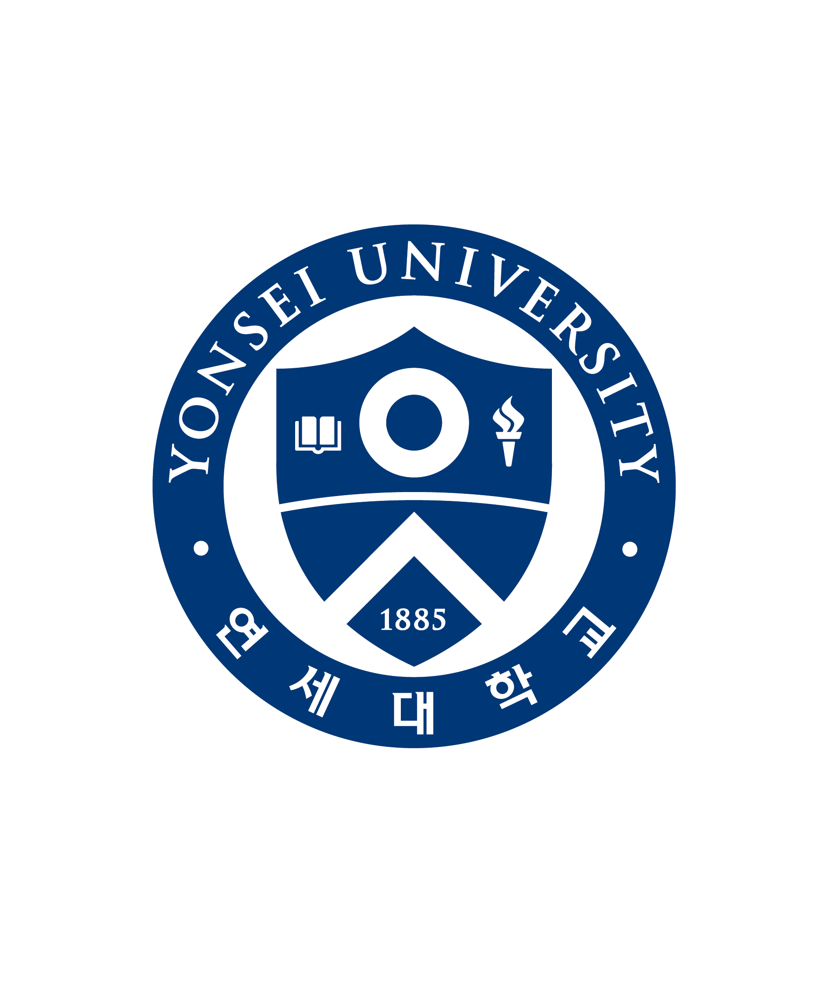

처음부터
뒤로 가기

연세대학교 · 스무살 멘토링
💗
두근두근 대학생활
장성이들의 스무살
두근두근 대학생활 대작전
시작하기 ▶
연세대학교
TWENTY MENTORING GAME
✨ 스무살 로망도
0
/100
📋 퀘스트
💬 상태창
화면을 누르면 계속
×
💬 남주 소개
×
📋 스무살 로망 퀘스트
각 퀘스트는 검정 실루엣 나레이션 → 상황 → 남주 선택지 순서로 진행됩니다. 남주를 고르면 그 남주만 확대되어 1:1 대화가 열립니다.